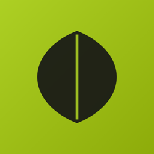

LeafIDLast updated: 4 October 2026
LeafID is an iOS app for identifying plants and keeping a personal collection of the ones you find. It is built and run by Mariana Minafro Spinelli (“we”, “us”). This policy explains what information the app handles, why, and the choices you have.
Account information. When you sign in with Apple, Google, or email, we receive your email address and, if you provide one, your name. Apple’s “Hide My Email” works with LeafID.
Plant photos. Photos you take or choose in the app are sent to our servers for identification. If you save a plant to your Herbarium, the photo and a processed card image are stored with your account. Before upload, photos are re-encoded, which removes embedded metadata such as camera details and GPS tags.
Location. If you allow location access, LeafID records where a plant was found (coordinates and the nearby place name) and saves it with that plant in your Herbarium. Location is only used while the app is open. You can turn it off in iOS Settings; identification still works without it.
Your Herbarium. The plants you save, along with their names, descriptions, dates, and locations, are stored with your account so they sync across your devices.
Usage and diagnostics. We collect app usage events (for example, that a scan was made or a screen was opened) and crash reports, to understand what works and fix problems. These are linked to your account so we can investigate issues you report.
We do not use your information for advertising, and we do not sell or rent it to anyone.
LeafID relies on these providers. Each receives only what it needs for its role.
| Provider | Purpose | What it receives |
|---|---|---|
| Supabase | Accounts, database, photo storage | Account details, Herbarium, photos, locations |
| Pl@ntNet | Plant identification | The photo being identified |
| Google (Gemini) | Backup identification and plant descriptions | The photo being identified (only if Pl@ntNet can’t), and plant names |
| Groq | Plant descriptions | Plant names only, never photos or personal data |
| Wikipedia | Native range of a species | Plant names only |
| PostHog | Product analytics | Usage events, account ID, email |
| Sentry | Crash reporting | Crash and device diagnostics |
| Apple, Google | Sign-in | Handled under their own privacy policies |
Plant descriptions are generated once per species and shared across all users. They contain no personal information.
Saved photos are stored at private, randomly generated web addresses so they load quickly in the app. They are not listed or searchable, but anyone who has the exact address of a photo could open it. When you share a plant, you choose what to send.
We keep your account and Herbarium for as long as your account exists. To delete everything, open the Druid tab and tap Delete account in the app. This permanently removes your account, saved plants, locations, and stored photos. Copies in backups and provider logs expire on their normal schedules.
Depending on where you live, you may have the right to access, correct, export, or delete your data, or to object to how it is used. Email us and we will respond within 30 days.
LeafID is not directed at children under 13, or the minimum age in your country. We do not knowingly collect data from them. If you believe a child has created an account, contact us and we will delete it.
If we change this policy, we will update the date above. For significant changes, we will also let you know in the app.
Questions or requests: mariana.minafro@gmail.com